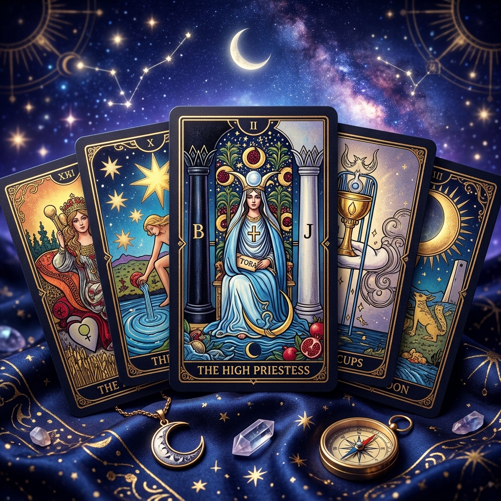

Receive intuitive guidance and fresh perspective on relationships, career decisions, personal growth, and life's crossroads. Tarot is a powerful mirror reflecting your subconscious truths.
Tarot Guidance is not about predicting a fixed future; it is about illuminating the present. The cards act as a symbolic language, a mirror reflecting the energetic currents, subconscious blocks, and hidden dynamics currently at play in your life.
Combined with intuitive channeling and deep analytical observation, a Tarot reading cuts through confusion. It helps you see the broader perspective of your situation, highlighting potential outcomes based on your current trajectory and empowering you to make aligned, conscious choices.
You are facing a major decision regarding career, relocation, or life direction and need objective clarity.
You want to understand the underlying dynamics of a romantic partnership, friendship, or family connection.
You feel stagnant or confused about your current circumstances and need a fresh, spiritual perspective to unblock your energy.
You are seeking general spiritual guidance, self-reflection, and actionable advice for your personal evolution.
We begin by discussing your current situation and clarifying the questions you want answered. Once the intention is set, Neelam connects with your energy and shuffles the cards, drawing a customized spread tailored to your specific inquiry.
As the cards are revealed, the reading becomes a collaborative dialogue. Rather than simply telling you what the cards mean, Neelam interprets the symbolic imagery in the context of your life, channeling intuitive insights and providing grounded, practical advice on how to navigate the energies presented.
No. Tarot shows the current energetic trajectory. If the cards indicate a challenging outcome, they also provide the guidance needed to change course. You always have free will.
Cards like Death or The Tower are highly misunderstood. They almost never indicate literal harm. Instead, they represent profound transformation, the clearing out of the old, and necessary rebirth.
Ethically, we do not read the private thoughts or energies of third parties without their permission. However, we can explore how your energy interacts with theirs and what you need to understand about the relationship dynamic.
Take the next step toward clarity and healing.